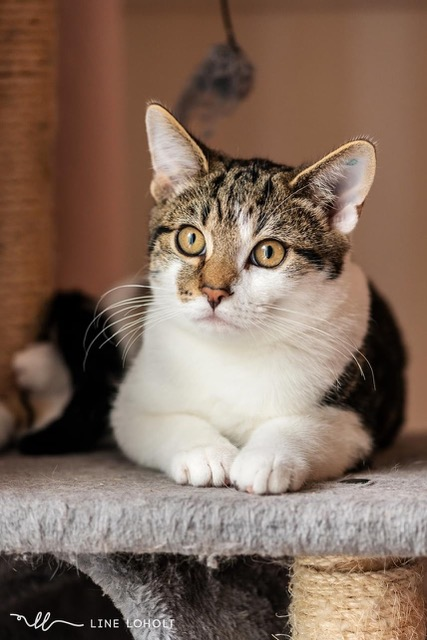

- Helse og Identifikasjon
- Alle katter som adopteres ut er kastrert, vaksinert, og chippet (ID-merket), eller dette skal være planlagt utført. Dette er inkludert i adopsjonsgebyret.
- Tilgang til Uteområder
- Alle katter skal ha tilgang til trygge områder både inne og ute. Fra ca. 8 måneders alder skal de kunne ferdes trygt alene ute, uten sele eller bånd.
- Vi adopterer IKKE ut ”innekatter”, med mindre katten er syk eller det er andre spesielle omstendigheter som gjør at den ikke kan være ute alene.
- Nedre Aldersgrense
- Nedre aldersgrense for adopsjon er 20 år. Yngre personer må gjennom en vurdering basert på bosted, arbeid, utdanning, livssituasjon, etc., for å sikre et stabilt hjem for katten.
- Øvre Aldersgrense
- Øvre aldersgrense for adopsjon er 80 år, og da kun voksne, helst litt eldre katter. Adopsjon krever at det finnes noen som kan hjelpe til med tilsyn og stell av katten dersom eieren blir syk eller faller fra. Aldersgrensen kan fravikes med styrets godkjenning.
- Barn og Katter
- Barn skal ALDRI gis hovedansvar for pass, stell og mating av katten.
- Oppfølging av Katten
- Den som adopterer forplikter seg til å følge opp katten med jevnlige veterinærbesøk, årlig vaksine og markkurer ved behov. Forsikring på dyret anbefales sterkt.
- Match mellom Katt og Familie
- Vi forsøker etter beste evne å adoptere ut rett katt til rett person/familie. Den som er på vakt ved adopsjon har rett til å nekte eller utsette adopsjon dersom det ikke virker som en god match.
- Varsling ved Omplassering eller Avlivning
- Hvis katten vurderes avlivet (unntatt på grunn av sykdom) eller omplassert, skal Dyrevenn Vestfold informeres. Organisasjonen har da rett, men ikke plikt, til å ta dyret tilbake.
Generelle Krav
Aldersgrenser for Adopsjon
Ansvaret for Katten
Adopsjonsprosessen
